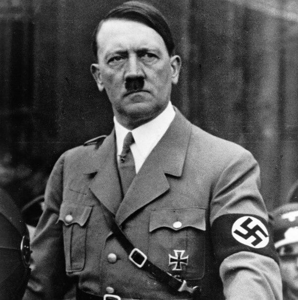
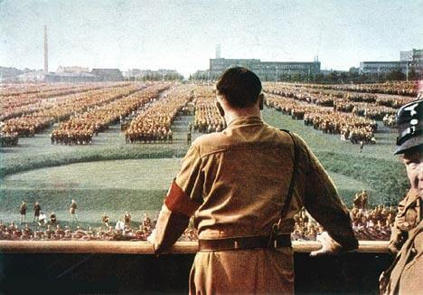
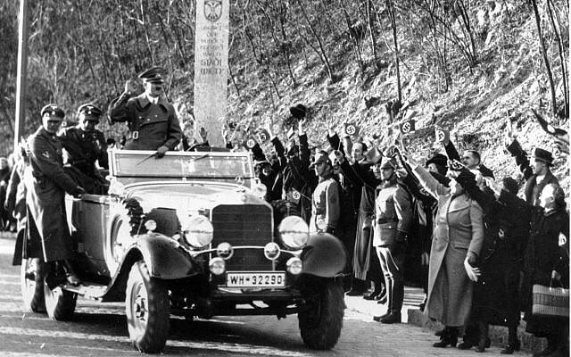
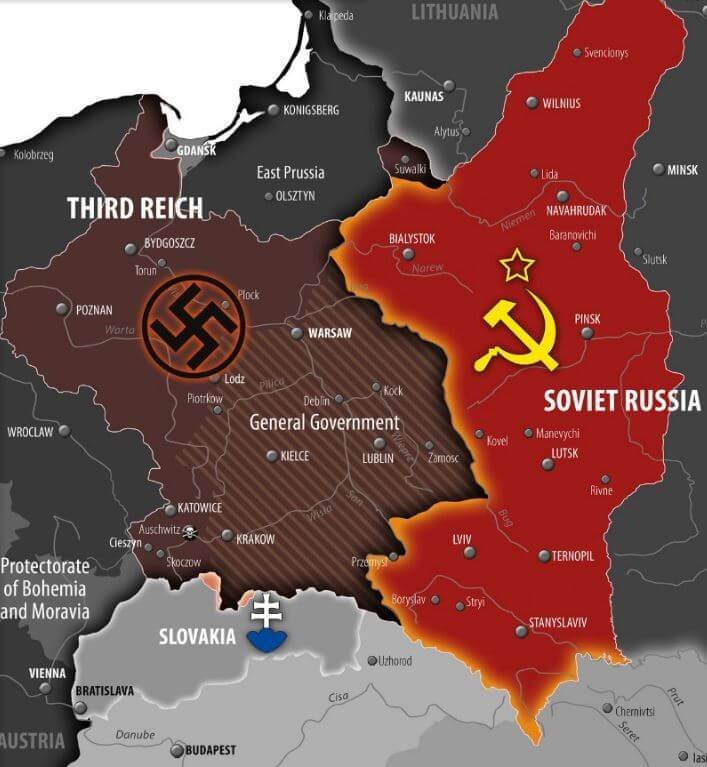
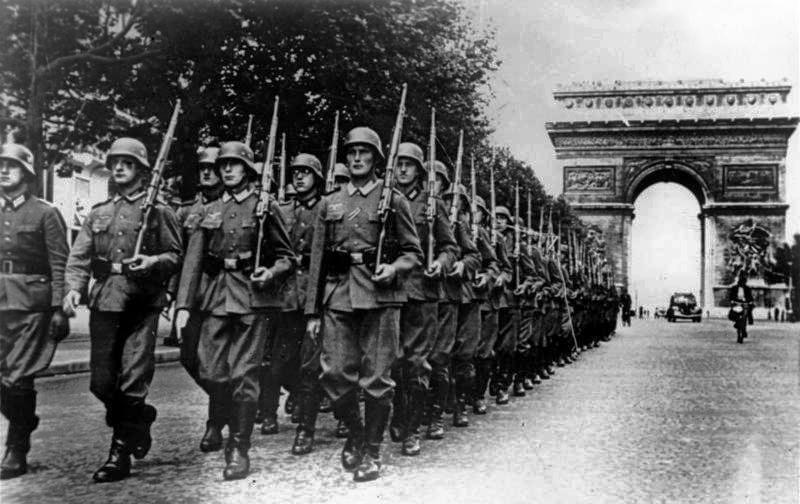
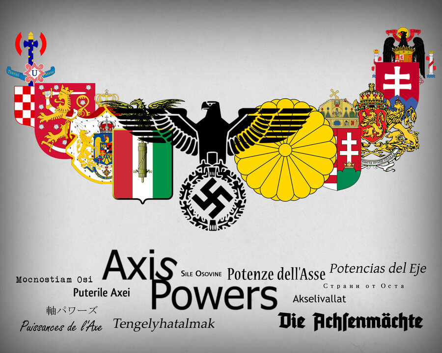
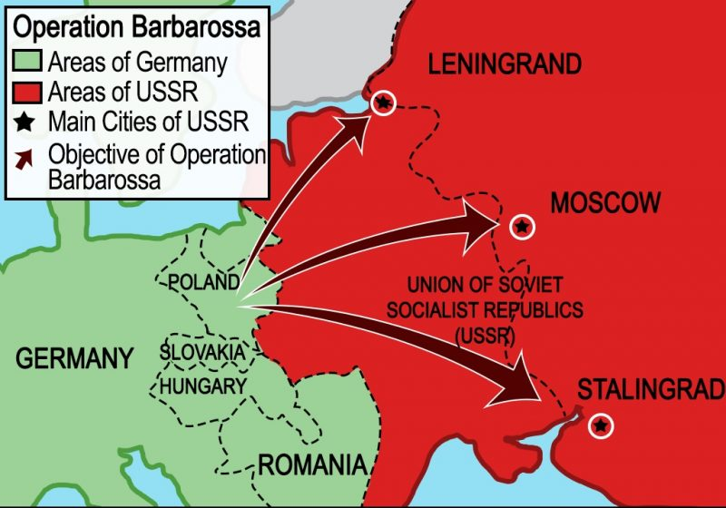
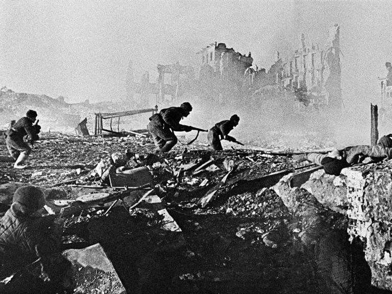

Nessa página será uma breve explicação do país antes da Segunda Guerra
Mundial, o motivo que levou esse país a entrar na guerra, o desempenho dele
durante a guerra e o que aconteceu com esse país após a guerra.
Com a derrota na Primeira Guerra Mundial, a Alemanha foi obrigada a aceitar
os termos do Tratado de Versalhes, perdendo territórios para vários países,
perdendo suas colônias na África e na Ásia, seu exército foi obrigado a ser
extremamente reduzido e talvez o pior, o país foi obrigado a pagar uma multa
de mais de 200 bilhôes de marcos alemães (moeda alemã na época). A
República de Weimar não conseguia pagar os vencedores da Primeira Guerra
Mundial, Reino Unido e França, por isso, começou a imprimir dinheiro, o que
gerou uma grande inflação, aumentando a crise e o desemprego, a solução foi
pedir empréstimos para os Estados Unidos, isso deixou o país, dependente dos
americanos, mas com esse dinheiro, a Alemanha estava conseguindo se
recuperar, mas isso mudou logo em seguida.
Adolf Hitler

Em 1929 acontece a queda na bolsa de valores de Nova York, gerando uma
crise em vários países no mundo, não foi
diferente na Alemanha, sua economia
voltou a ficar péssima, além disso, Reino
Unido e França queriam o dinheiro
imposto no Tratado de Versalhes. Com o
desemprego aumentando, a população
alemã começou a dar mais atenção às
ideias comunistas e fascistas, dos
grupos fascistas, o que mais se
destacava era o partido nazista, seu
líder, Adolf Hitler, cada vez mais
chamava atenção por seus discursos,
prometendo resolver a crise e também
renegar o Tratado de Versalhes, que
obviamente, só prejudicava a
Alemanha.
Nas eleições de 1932, o herói de guerra, Paul Hindenburg, foi eleito presidente
do pais, isso mudou pouco a crise, mais tarde, Hindenburg escolhe Hitler para
ser o chanceler (um tipo de primeiro-ministro), Hitler começa a tirar proveito de
seu novo poder e cada vez mais reprimia partidos opositores, principalmente
partidos comunistas. Em 1934, Paul Hindenburg morre de câncer, Hitler une o
cargo de chanceler e presidente e se torna o ‘fuhrer’, palavra alemã que
significa líder.

Hitler se torna o fuhrer.
Para controlar a crise e tornar a Alemanha uma potência, Hitler começou a
investir em infraestruturas, gerando muitos empregos, deixando a população
alemã mais contente, mas enquanto isso, judeus e ciganos cada vez mais
perdiam direitos na Alemanha, mais tarde, essas pessoas seriam perseguidas.
Motivos para entrar na Segunda Guerra Mundial
Hitler, desde o início, sempre revogou o Tratado de Versalhes, assim que se
tornou o fuhrer, começou a investir na indústria bélica, aumentando seu
exército para mais de 100 mil homens (o limite imposto era de 100 mil
soldados), com sua indústria bélica cada vez mais forte, a Alemanha começou
a ter blindados e aviões cada vez mais poderosos, Reino Unido e França não
gostaram disso, mas não fizeram nada.
Após aumentar seu exército, Hitler começava a olhar para outros países,
inicialmente, ele anexou a Áustria,
como os austríacos são de origem
germânica e no país havia muitos
admiradores do partido nazistas,
não se incomodaram, o governo
austríaco chegou a fazer uma
votação, e a grande maioria
aceitou fazer parte da Alemanha,
quando as tropas alemãs
chegaram na Áustria foram
recebidos com festa.
Após anexar a Áustria, Hitler
mirou para a região dos sudetos,
da Checoslováquia, o governo
tcheco ameaçou uma resistência, para evitar um possível conflito, Reino Unido
e França, na Conferência de Munique, entregam os sudetos para a Alemanha,
em troca de uma declaração por escrito, de Hitler, que ele não tinha mais
ambições territoriais, Hitler aceita, mas pouco tempo depois, anexa outras
regiões da Checoslováquia, quebrando o acordo que havia feito com os
britânicos e franceses, mais tarde, Hitler teria toda a Checoslováquia, Reino
Unido e França, mais uma vez, não fizeram nada.

Hitler sendo recebido com festa em Viena, capital da Áustria.
Conforme seu poder foi aumentando, a Alemanha começa a criar parcerias, a
primeira foi com a Itália, que também tinha um fascista no poder, Benito
Mussolini, depois, seria com o Japão. Em 1936, começa a guerra civil
espanhola, entre fascistas e comunistas, Hitler e Mussolini apoiaram os
fascistas, que eram liderados por Francisco Franco, Hitler usou essa guerra
para testar seus novos equipamentos, como tanques e aviões, a guerra civil
terminaria em 1939, com a vitória dos fascistas.
Em 1939, Hitler exige a cidade de danzig, para poder conectar a Alemanha
com a Prússia, a Polônia se recusou a entregar a cidade, temendo uma
possível invasão alemã, os poloneses assinam um pacto de defesa com Reino
Unido e França. A esse ponto, a Alemanha já havia feito um pacto com a União
Soviética, em que os países se comprometiam a não ser se atacar, além de
dividir a Polônia. Então assim, no dia 1 de setembro, a Alemanha invade a
Polônia, França e Reino Unido honram o pacto com a Polônia e declaram
guerra à Alemanha.
Durante a Segunda Guerra Mundial
Apesar de Reino Unido e França declarem guerra à Alemanha, não fizeram
quase nada para impedir o avanço nazista na Polônia, a França até enviou
uma força expedicionária, mas não puderam fazer quase nada, usando a tática
Blitzkrieg e com a União
Soviética também invadindo a Polônia, a
Polônia não resiste e acaba sendo
dominada em menos de um mês.
Conforme estava previsto no pacto com a
União Soviética, a Polônia é dividida.
Polônia dividida entre nazistas e
soviéticos.

Após isso, a guerra “para” por alguns
meses, os países participantes não faziam
nada, mas a partir de abril de 1940, a
Alemanha começa a invadir Luxemburgo,
Bélgica, Holanda, Dinamarca, Noruega e
França. Para chegar na França, a
Alemanha usaria a mesma tática da
Primeira Guerra Mundial, passar pela
Bélgica para chegar lá, mas algumas
semanas antes disso, um piloto alemão
com essas informações acaba sendo
abatido, agora os franceses e britânicos
sabiam da tática, Hitler, sabendo da morte do piloto, precisava mudar sua
tática, um dos seus generais o aconselhou a atravessar a floresta de Ardennes,
França e Reino Unido sabiam da possiblidade dos alemães atravessarem a
floresta, mas acreditavam mais na possiblidade dos tanques ficarem
encalhados pelo alto volume de árvores, isso não aconteceu, os tanques e a
infantaria atravessaram a floresta, com isso, as tropas nazistas acabam
encurralando as tropas britânicas e francesas para a praia de Dunkirk.
Com essa vitória, os alemães avançaram livremente para a capital francesa,
assim, em 14 de maio, as tropas alemãs marcham nas ruas de Paris e a
França se rende à Alemanha.

Tropas alemãs marchando nas ruas de Paris.
Com a rendição, o novo governo francês promete cooperar com a Alemanha,
por exemplo, entregando judeus para os nazistas. Após conquistar boa parte
da Europa ocidental, Hitler começava a atacar o Reino Unido, bombardeando
as cidades inglesas, isso inicia a Batalha da Grã-Bretanha, uma batalha
travada apenas com aviões, Hitler precisava ter domínio dos céus britânicos
para poder enviar paraquedistas e invadir o Reino Unido, mas a força aérea
britânica derrota a luftwaffe, impedindo qualquer chance da Alemanha invadir a
ilha da Grã-Bretanha, mas mesmo assim, a Alemanha continuou a bombardear
cidades inglesas, como Londres e Liverpool.
o Eixo.

Durante a invasão alemã na
França, a Itália entrou na guerra
ao lado da Alemanha, e mais
tarde, Alemanha, Itália e Japão
criariam o Eixo, uma aliança de
defesa mútuo entre os países.
Ainda em 1940, a Itália começa a
invadir o Egito e a Grécia, mas
acaba falhando em ambas,
forçando Mussolini a pedir ajuda
para Hitler, que, em 1941, atende
e envia para o norte da África a
Afrika Korps, uma força
expedicionária.
Para chegar na Grécia, a
Alemanha precisaria passar por
alguns países, como Hungria,
Bulgária e Romênia, que entraram para o Eixo,
a Iugoslávia também se aliou ao Eixo, mas no mesmo dia em que assinou o
pacto, houve um golpe de estado apoiado pelo Reino Unido, fazendo a
Iugoslávia se juntar aos britânicos, mas rapidamente a Iugoslávia é invadida e
dominada pelos alemães, pouco tempo depois, a Alemanha invade e derrota a
Grécia em menos de um mês.
Com toda a Europa ocidental em seu controle (menos o Reino Unido), a
Alemanha inicia a Operação Barbarossa, que tinha como objetivo invadir a
União Soviética, rompendo com o pacto que havia feito com os soviéticos.
Durante toda a operação, cerca de 4 milhões de soldados, entre alemães,
italianos, búlgaros, romenos e húngaros, invadiram a União Soviética, a
Finlândia também invadiu, ela não era exatamente parte do Eixo, mas queria
recuperar seus territórios perdidos na Guerra de Inverno. No início da
invasão, as tropas do Eixo ganharam várias batalhas contra os soviéticos, para
derrotar a União Soviética, as tropas foram divididas em três partes, cada um
com um objetivo diferente.

Operação barbarossa, as tropas do Eixo se dividiram em três, uma parte iria para
Leningrado, a segunda
iria para a capital Moscou e outra iria para Stalingrado.
A Alemanha estava próxima de derrotar os soviéticos, mas por causa do
inverno, as tropas começaram a ficar sem suprimentos, e por conta do vasto
território russo, a tática Blitzkrieg não era tão eficaz. As tropas que marchariam
para Moscou, chegaram a ficar 30km de distância da cidade, mas por conta do
inverno, foram obrigados a esperar, Stalin percebeu isso e mobilizou um
grande exército para defender a capital, e funcionou, forçando os alemães a
recuar. No Pacífico, os japoneses atacam a base norte-americana de Pearl
Harbor, por causa disso, os americanos entram na guerra, em apenas um ano,
o Eixo trouxe dois aliados para o Reino Unido, que até esse ponto, estava
sozinho na guerra.
Desde que os nazistas chegaram ao poder na Alemanha, os judeus foram
perdendo mais direitos, até chegar em um ponto em que começaram a serem
mandados para guetos, áreas reservadas apenas para os judeus, onde ficavam
sem receber comida e roupas necessárias. em 1942, os nazistas colocam
em prática o que ficou conhecido como “Solução final”, um plano para criar
vários campos de concentração, não só na Alemanha, em todos os países
conquistados pela Alemanha, e mandar os judeus para lá, nesses campos, eles
fariam trabalho pesado e sem receber comida direito, nesses campos também
teriam câmaras de gás, aonde os judeus seriam mortos, em apenas um dia,
Batalha de Stalingrado.

essas câmaras era capazes de matar milhares de judeus. ainda em 1942,
na frente oriental, as tropas alemãs que estavam indo para Stalingrado,
chegam na cidade e derrotam os
soviéticos que estavam lá, mas
os soviéticos mobilizaram um
exército gigantesco e cercam a
cidade, isso geraria a Batalha de
Stalingrado, em que os
soviéticos começaram a derrotar
os alemães, o general que
estava comandando as tropas
alemãs na cidade, pediu
permissão à Hitler para que eles
recuassem, mas Hitler recusou,
com a recusa de Hitler e a ordem
de Stalin para que nenhum
soviético recuasse, a União
Soviética vence essa batalha,
forçando os alemães a se
renderem.
Em 1943, os aliados derrotam e expulsam a Afrika Korps e as tropas italianas
no norte da África, depois dessa vitória, os aliados começam a invadir o sul da
Itália, para tentar negociar paz com os aliados, os italianos tiram Mussolini do
poder e o prendem em um hotel nas montanhas, Hitler imediatamente invade o
norte da Itália, tira Mussolini da cadeia e o coloca de novo no poder, nesse
ponto, a Itália é dividida entre a República Social Italiana, com Mussolini no
poder e a Itália normal, apoiada pelos aliados.
Na frente oriental, os alemães iniciam outra ofensiva contra os soviéticos, mas
os soviéticos descobriram aonde os nazistas iriam atacar e mobilizaram outro
exército enorme, os alemães atacaram com 800 mil soldados e 3 mil tanques,
mas os soviéticos mobilizaram 2 milhões de soldados e 5 mil tanques, isso
gerou a Batalha de Kursk, que terminou em vitória dos soviéticos, após essa
derrota, os alemães não conseguiram mais iniciar outra ofensiva contra a União
Soviética.
Em 1944, na frente ocidental, os aliados iniciam a operação Overlord, que
geraria o Dia D, em que as forças anglo-americanas invadem a Normandia,
uma região da França, e começam a derrotar os alemães, algumas semanas
depois, França, Holanda e Bélgica são libertadas do domínio nazista. Na frente
oriental, os soviéticos iniciam uma grande ofensiva, empurrando os alemães de
volta para a Alemanha.
Em 1945, a derrota do Eixo já era certa, com os soviéticos chegando e cercam
a cidade de Berlim, Hitler é obrigado a se refugiar em um bunker enquanto
manda idosos e crianças lutarem contra os russos, com pena de morte para
qualquer um que tentasse fugir. Mas não é o bastante, os soviéticos cercam o
Reichstag e começam a se aproximar do bunker em que Hitler estava, mas
Hitler já havia cometido suicídio, pouco tempo depois, a Alemanha se rende,
acabando com a guerra na Europa, mas ela continuaria no Pacífico.
Pós-Guerra
As consequências para a Alemanha foram parecidas, mas um pouco menos
pesadas do que as consequências por ter perdido a Primeira Guerra Mundial, o
país perdeu todos os territórios que conquistou e anexou durante a guerra, seu
território principal foi dividido em 4 zonas de ocupação por Reino Unido,
França, Estados Unidos e União Soviética, para evitar que a Alemanha fosse,
mais uma vez, uma ameaça para o mundo, 1.500 fábricas foram fechadas,
reduzindo bem o seu poder bélico. O país não foi obrigado a pagar nada em
dinheiro, mas os aliados exigiram mão-de-obra para suas fábricas e agricultura
e depois, Estados Unidos e Reino pegariam descoberta e equipamentos como
compensação. Membros do partido nazista foram julgados e condenados
por crimes de guerra e crimes contra a humanidade no Julgamento de
Nuremberg e se iniciou na Alemanha um processo de desnazificação, para
limpar a sociedade alemã da influência de Hitler e o partido nazista. Mais tarde,
Reino Unido, França e Estados Unidos juntaram suas zonas de ocupação,
criando a Alemanha ocidental, a parte ocupada pelos soviéticos se tornou a
Alemanha oriental, a cidade de Berlim ficou dividida também.